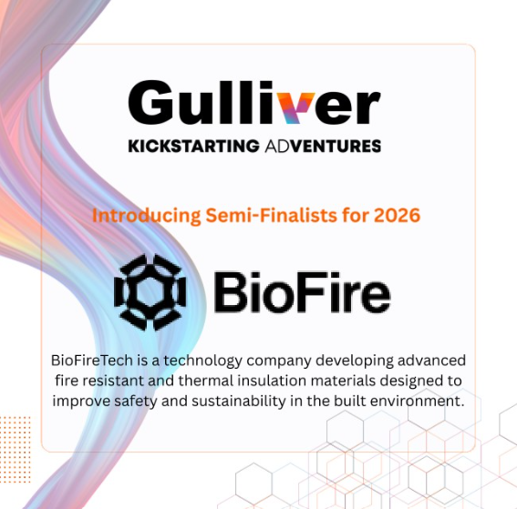
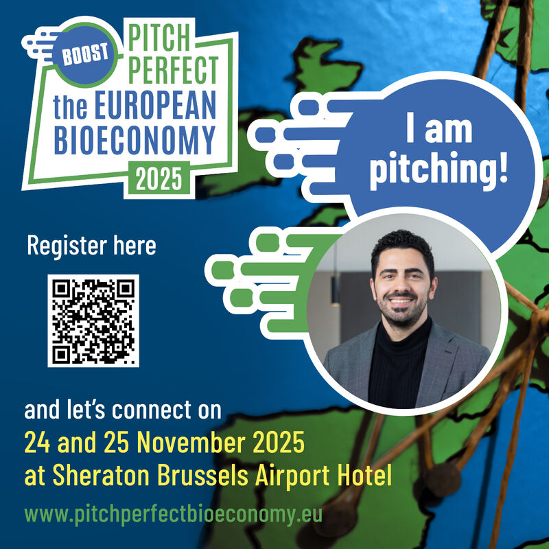
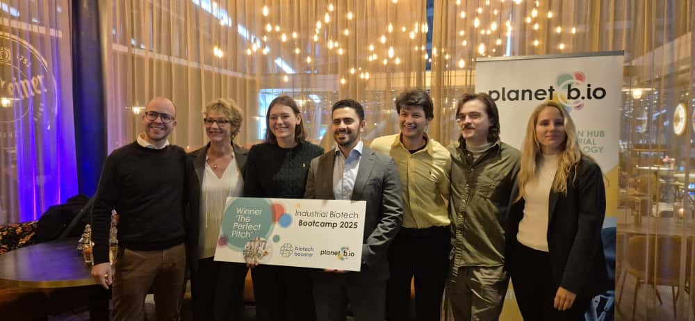
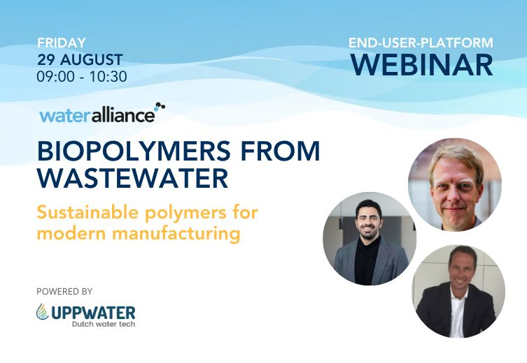
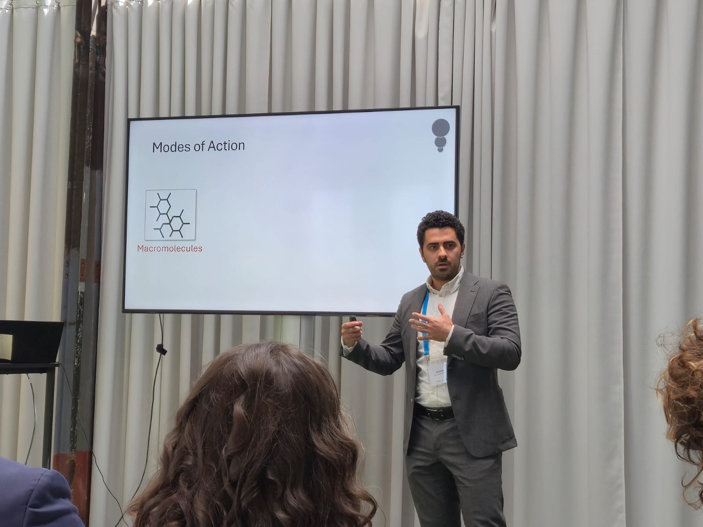

Jan 2026 — Pitched at Gulliver (Leiden)
Presented BioFire’s technology and market positioning to an audience of early-stage investors and innovation partners.

Latest updates from BioFire
Presented BioFire’s technology and market positioning to an audience of early-stage investors and innovation partners.

Technology and mission highlighted in a national media segment focused on sustainable materials and wastewater treatment. Watch the segment
Selected to pitch BioFire’s flame-retardant technology to an international panel of investors and industry experts.

Presented application-driven use cases for wastewater-derived biopolymers in materials and chemicals.

Admitted to a national biotechnology valorisation programme following technical and commercial evaluation. Learn more
Shared early technical insights on biopolymer extraction and flame-retardant functionality with industry stakeholders.

Joined an impact-driven entrepreneurship programme supporting early-stage deep-tech ventures. Learn more
Introduced BioFire’s circular biotechnology approach to professionals from the water and materials sectors.
